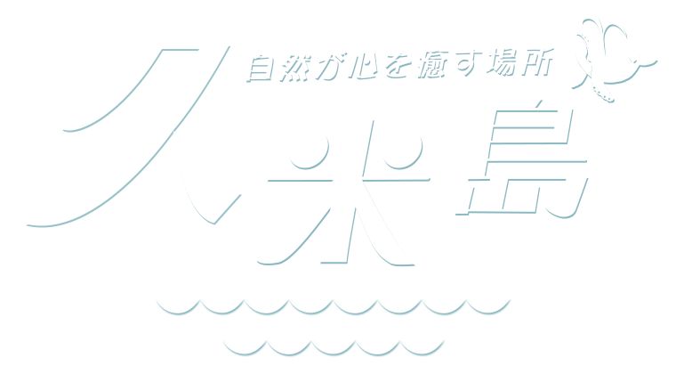
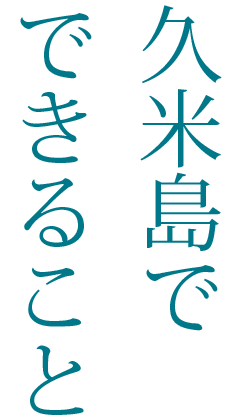
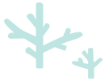
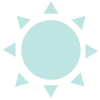
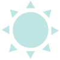
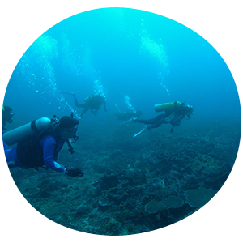
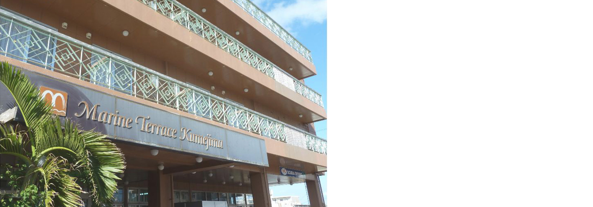

ホテルマリンテラス久米島は日本の渚
百選「イーフビーチ」まで徒歩１分。
ダイビング向けの設備も充実しており、
ロングステイも可能です。
島でただ一つの24時間営業コンビニエ
ンスストアも隣接し、周辺には飲食店
もございます。
ビジネスに、観光に、皆さまのお越し
をお待ちしています。



ダイビング、ウインドサーフィン、
 

赤瓦屋根の伝統的な沖縄家屋で

ダイビング、ウインドサーフィン、
どれにしようかな。
日本の渚百選にも選ばれた「イーフビーチ」。
波穏やかな遠浅のビーチはマリンスポーツの聖地とされている。
また久米島沖に浮かぶ真っ白い砂だけのビーチ「ハテの浜」も一度は見ておく価値あり。
赤瓦屋根の伝統的な沖縄家屋で
歴史を感じる。
島の東に位置する上江洲家は1754年ごろに建てられた琉球王朝時代の士族の家で、国の重要指定文化財にも指定されている。
青い空、赤瓦屋根、美しい琉球王朝士族の家でゆっくりとした時間を過ごしてみては。

ダイビング向けの設備も充実しており、ロングステイも可能です。
島でただ一つの24時間営業コンビニエンスストアも隣接し、周辺には飲食店もございます。
ビジネスに、観光に、皆さまのお越しをお待ちしています。">
ビジネスに、観光に、皆さまのお越しをお待ちしています。">
ホテルマリンテラス久米島は日本の渚百選「イーフビーチ」まで徒歩１分。
ダイビング向けの設備も充実しており、ロングステイも可能です。
島でただ一つの24時間営業コンビニエンスストアも隣接し、周辺には飲食店もございます。
ビジネスに、観光に、皆さまのお越しをお待ちしています。